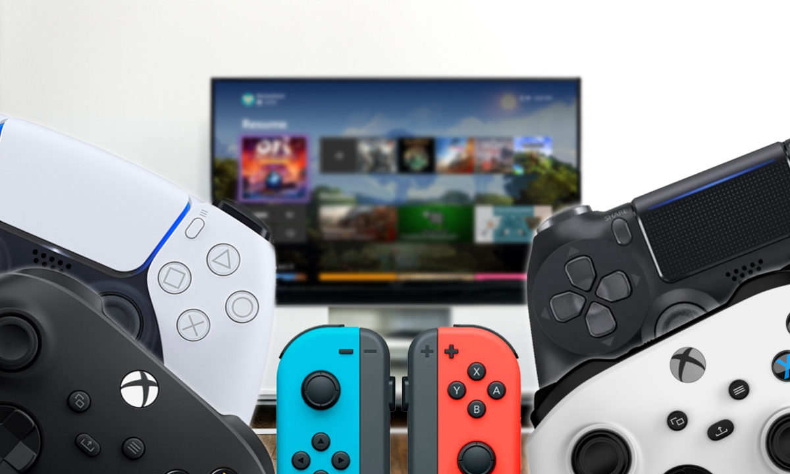
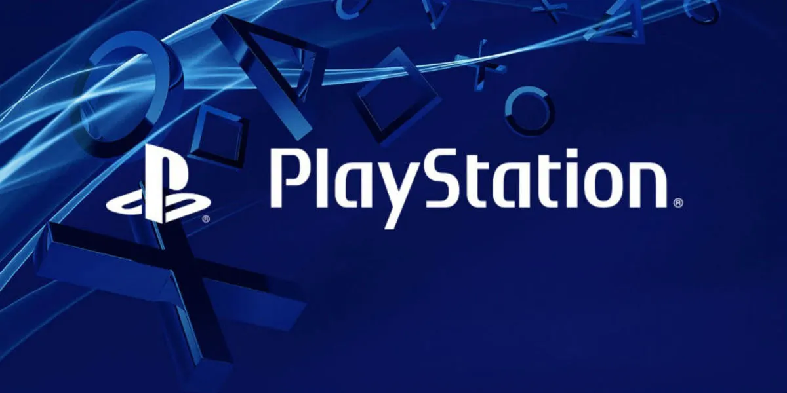
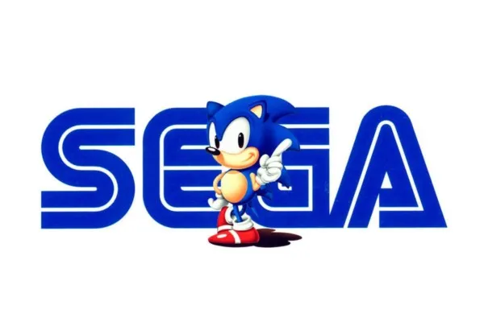

Un auto deportivo de los mas excluivos, informacion sobre las tendencias actuales en autos deportivos.

Los jugadores interactúan con los videojuegos a través de dispositivos de entrada a los que se conoce como controladores o mandos. Mediante estos dispositivos, los jugadores controlan los movimientos y acciones de los personajes del juego y varía dependiendo de la plataforma. Por ejemplo, un controlador podría únicamente consistir de un botón y una palanca de mando o joystick, mientras otro podría presentar una docena de botones y una o más palancas, lo que llamamos mando. Los primeros juegos informáticos solían hacer uso de un teclado para llevar a cabo la interacción, o bien requerían que el usuario adquiriera un mando con un botón como mínimo.2 Muchos juegos de computadora modernos permiten o exigen que el usuario utilice un teclado y un ratón de forma simultánea.
CREADORES DE VIDEOJUEGOS
Tenemos grandes empresas conocidas de creadores de videojuegos


PLAYSTATION
La marca se introdujo por primera vez el 28 de febrero de 1990 en Japón1 y ha desarrollado y publicado cinco videoconsolas de sobremesa, que incluyen un centro de medios de comunicación y un servicio en línea, posteriormente se introdujeron revistas y computadoras.
NINTENDO
Nintendo Company, Ltd. (任天堂株式会社 Nintendō Kabushiki-gaisha?) es una empresa de entretenimiento dedicada a la investigación, desarrollo y distribución de software y hardware de videojuegos, y juegos de cartas, con sede en Kioto, Japón.Su origen se remonta a 1889, cuando comenzó a operar como Nintendo Koppai tras ser fundada por el artesano Fusajirō Yamauchi con el objetivo de producir y comercializar naipes hanafuda.Tras incursionar en varias líneas de negocio durante la década de 1960 y adquirir una personalidad jurídica de empresa de capital abierto bajo la denominación actual, en 1977 distribuyó su primera videoconsola en Japón, la Color TV Game 15.
SEGA
Sega Corporationn 1 (estilizado SEGA) es una multinacional japonesa de desarrollo y distribución de videojuegos con sede en Shinagawa (Tokio). Sus dos filiales internacionales, Sega América y Sega Europa, tienen sus sedes en Irvine (California) y Londres, respectivamente. La división de arcade de Sega se denominó Sega Interactive Co., Ltd. de 2015 a 2020, para luego fusionarse con Sega Games y crear Sega Corporation. Sega es una filial de Sega Group Corporation, que a su vez forma parte de Sega Sammy Holdings. Entre 1983 y 2001 Sega también fue desarrolladora de videoconsolas.